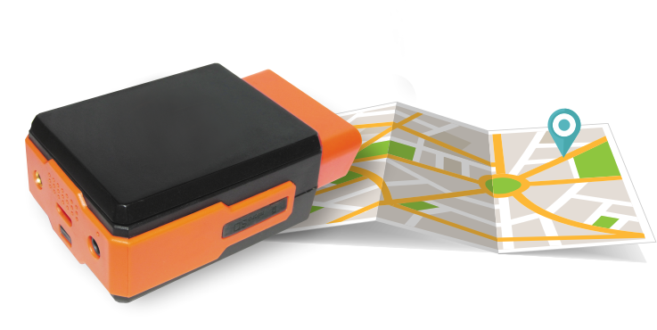
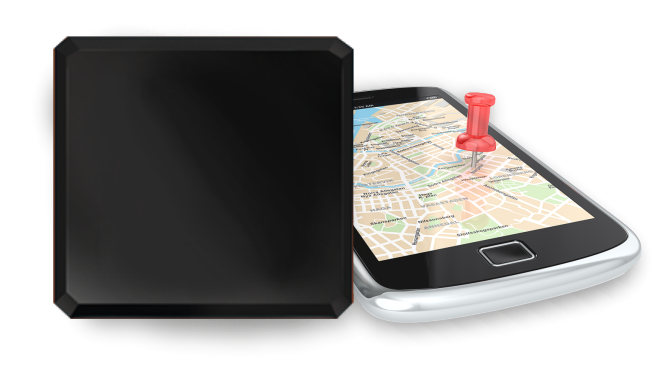

monitor every vere
and everything
our services are focused on many aspects of life
it combines monitoring, smart home, tracking of vehicles and cargoes and safety of people.
OBD-II Scanner is a multifunctional in-vehicle diagnostic and monitoring device running Android OS. It turns a regular car into a smart car and allows you to take care of your relatives, analyze driver behavior, receive emergency notifications, protect your car from theft, check vehicle data and save money on fuel and insurance companies.

Monitor driver behavior distantly

Bought the first car for your child? Make sure he drives it safely
Analyze your actions on the road in 3D
OBD-II Scanner is a multifunctional in-vehicle diagnostic and monitoring device running Android OS. It turns a regular car into a smart car and allows you to take care of your relatives, analyze driver behavior, receive emergency notifications, protect your car from theft, check vehicle data and save money on fuel and insurance companies.
OBD-II Scanner is a multifunctional in-vehicle diagnostic and monitoring device running Android OS. It turns a regular car into a smart car and allows you to take care of your relatives, analyze driver behavior, receive emergency notifications, protect your car from theft, check vehicle data and save money on fuel and insurance companies.
